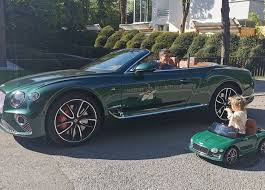

Widywany był na pokładach prywatnych jachtów, odrzutowców oraz za kierownicą takich aut jak: Maserati GranTurismo Sport, Lamborghini Gallardo, Ferrari F12berlinetta, Ferrari 599 GTB Fiorano, Ferrari 812 Superfast, Porsche Cayenne GTS, Porsche 911 Speedster z limitowanej kolekcji modelu, Bentley Continental GT Speed Convertible, Mercedes S560 Maybach i wielu innych. W 2017 przefarbował chwilowo swoje włosy na blond.